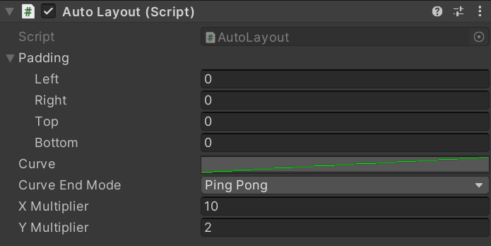
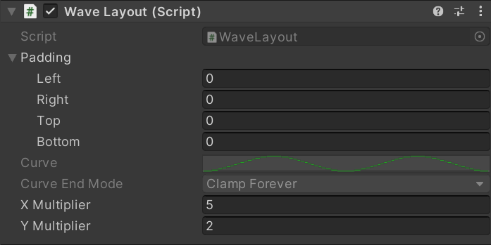
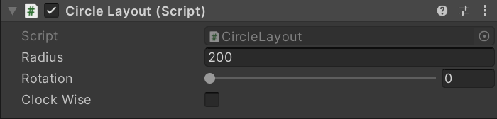

基于UGUI布局系统的扩展组件
该系列组件均基于UGUI的布局系统进行扩展开发，通过自定义扩展也能帮助开发者加深对UGUI布局系统的了解，源代码和示例请下载资源查看。
布局扩展组件类型
AutoLayout
自动布局组件，基于 UGUI 的 LayoutGroup 组件，通过 Curve 作为输入参数来控制布局，虽然能实现更灵活的布局，但使用复杂度也会更高。具体参数如下图：

AutoLayout
| 参数 | 说明 |
|---|---|
| Padding | 就是 UGUI 布局组件中使用的边距参数，例如 HorizontalGroup、VerticalGroup 等。 |
| Curve | 使用的 AnimationCurve，用于设计布局元素的位置变化规律和相对位置等。 |
| Curve End Mode | 曲线末端的结束模式，也是使用的 AnimationCurve 的 WrapMode 枚举，具体含义可以参考官方文档。 |
| XMultiplier | 曲线水平轴乘系数，影响各个布局元素之间的水平间距。 |
| YMultiplier | 曲线垂直轴乘系数，影响各个布局元素之间的垂直间距。 |
WaveLayout
波浪布局组件，基于 AutoLayout 组件扩展，使元素能够像波浪一样均匀分布。

WaveLayout
| 参数 | 说明 |
|---|---|
| Padding | 同 AutoLayout |
| XMultiplier | 同 AutoLayout |
| YMultiplier | 同 AutoLayout |
CircleLayout
圆形布局组件，基于 UGUI 的 LayoutGroup 组件，使元素可以均匀分布成一个圆形。

CircleLayout
| 参数 | 说明 |
|---|---|
| Radius | 圆的半径 |
| Rotation | 旋转角度 |
| ClockWise | 是否为顺时针分布 |
资源下载
本博客所有文章除特别声明外，均采用 CC BY-NC-SA 4.0 许可协议。转载请注明来源 我与岁月的森林的博客！
评论